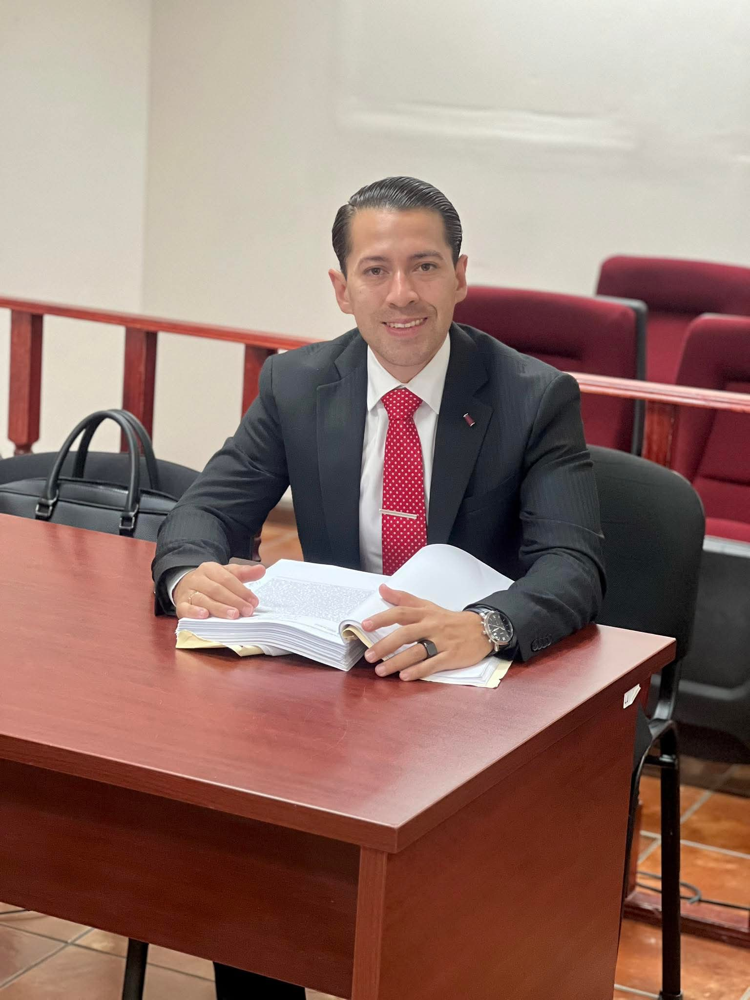

Protegemos su libertad, patrimonio y reputación. Especialistas en el Sistema Penal Acusatorio y Juicio de Amparo.
Combina rigor académico de nivel Maestría con el trabajo operativo diario de nuestro equipo de asociados y pasantes.

Titular del DespachoEspecialista en estrategia de defensa en audiencias orales, amparo contra órdenes de aprehensión y gestión de crisis penales complejas.
Personal técnico encargado del seguimiento continuo a carpetas de investigación, revisión de acuerdos en Juzgados y atención inmediata en dependencias.
Soluciones jurídicas enfáticas en la materia penal sustantiva y adjetiva.
Intervención inmediata desde las primeras horas de detención ante el Ministerio Público y Audiencia Inicial.
Suspensión de órdenes de aprehensión, combate a medidas cautelares y violaciones al debido proceso.
Defensa y querellas complejas en fraude, abuso de confianza, despojo y delitos corporativos.
Desahogo de pruebas periciales, interrogatorios y alegatos de clausura en etapa de Juicio.
Un proceso estructurado para maximizar las posibilidades de éxito técnico.
Toma de control del caso, revisión de registros de investigación y contención de riesgos legales.
Construcción de hipótesis defensiva con peritajes privados, datos de prueba y análisis normativo.
Defensa técnica en estrados, debates de medidas cautelares y recursos de impugnación.
Respuestas claras a las dudas más comunes ante una contingencia penal.
No rinda declaraciones sin la presencia de un abogado defensor especializado. Contáctenos de inmediato (967 129 2032); nuestro equipo acude a las dependencias para garantizar sus derechos y el acceso a la carpeta de investigación.
Un grado de Maestría en Ciencias Penales asegura un dominio profundo sobre teoría del delito, derecho probatorio y litigación oral avanzada, lo que permite detectar fallas técnicas procesales que un abogado generalista suele pasar por alto.
Sí. A través de la tramitación de un Juicio de Amparo Indirecto, es posible solicitar la suspensión provisional y definitiva contra actos de los Jueces de Control para conocer el origen de la acusación sin privación inmediata de la libertad.
Atención directa del Maestro en Ciencias Penales y su equipo litigante.
Iniciar Chat de Consulta